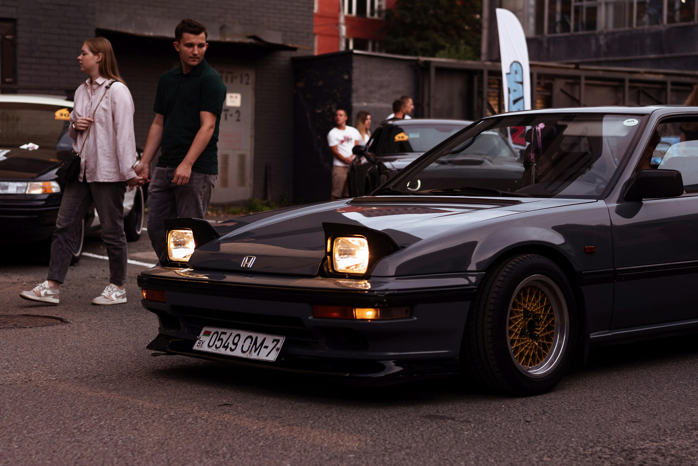
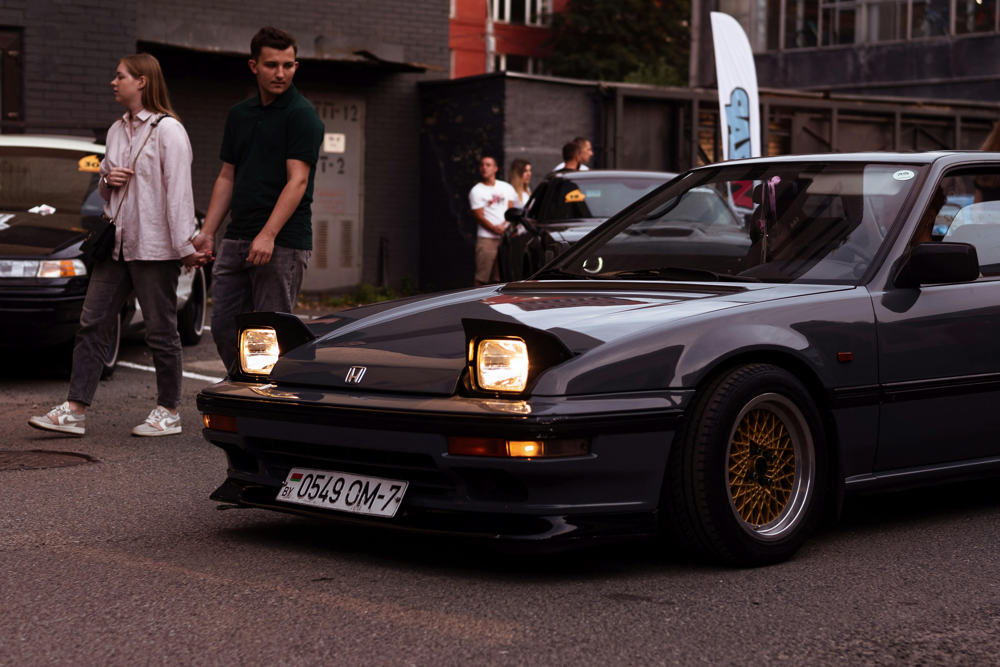

Rövid történet
A Honda története 1948-ban kezdődött Japánban, amikor Soichiro Honda megalapította a vállalatot. Kezdetben motorbiciklik gyártásával foglalkoztak, az első nagy sikerük az 1949-ben bemutatott Honda Dream D-Type volt. Az 1960-as években léptek be az autóiparba, ahol az első modelljük a Honda T360 kis teherautó és a Honda S500 sportautó volt. Az évtizedek során a Honda folyamatosan növekedett, és világszerte ismertté vált megbízható, innovatív és üzemanyag-takarékos járműveiről. A márka nemcsak a személyautók és motorok piacán szerzett hírnevet, hanem a motorsportban is, különösen a Forma-1-ben és a MotoGP-ben, ahol számos bajnoki címet nyertek
 
